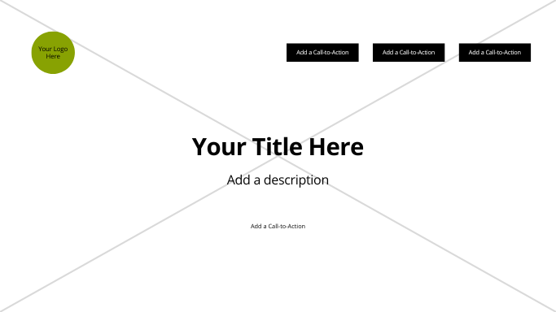

Wireframe:


This section will cover must-visit landmarks such as the Golden Gate Bridge, Alcatraz Island, Fisherman’s Wharf, and Chinatown, providing details on history, best visiting times, and ticket information.
Visitors looking for great food experiences will find recommendations on the best places for sourdough bread, seafood at Pier 39, Mission-style burritos, and Michelin-starred restaurants.
This section will provide insights on public transportation options like BART, Muni, cable cars, and bike rentals, making it easier for visitors to navigate the city.
The color scheme for this site includes two main colors:
/* CSS HSL */
--black: hsla(0, 0%, 0%, 1);
--eerie-black: hsla(120, 7%, 11%, 1);
--caribbean-current: hsla(182, 100%, 23%, 1);
--light-sea-green: hsla(175, 87%, 40%, 1);
--hookers-green: hsla(173, 14%, 48%, 1);
--floral-white: hsla(47, 43%, 96%, 1);
--white: hsla(0, 0%, 100%, 1);